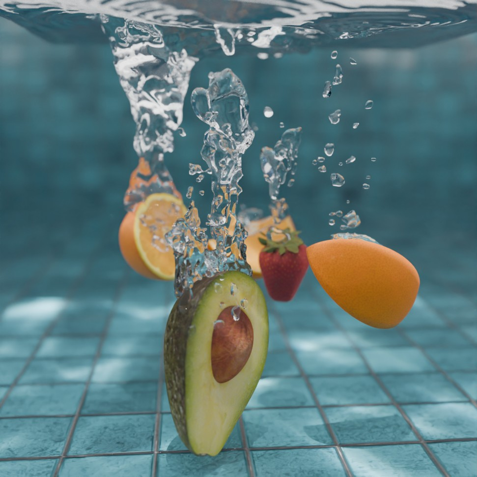
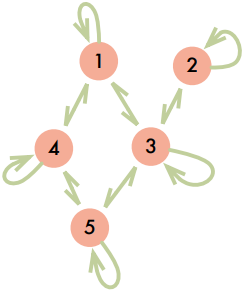
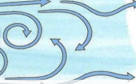
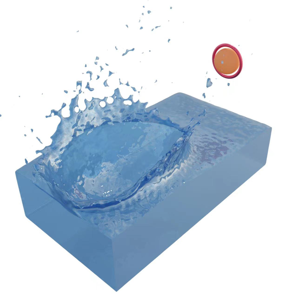
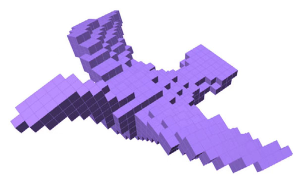

I am a rising third-year CS Ph.D. student at Stanford University, advised by Prof. Doug James. I work at the intersection of
simulation, graphics, and AI.
My current research focuses on physics-based simulation and learning.
More broadly, I am excited about building intelligent machines at scale that can understand, reason
about, and act in the physical world — machines with reasoning grounded in physical knowledge and
a thinking process that is traceable and verifiable, and that can ultimately assist people in the real
world.
I received both my B.E. in CS and my M.S. from the University of
Science and Technology of China (USTC), where I was very fortunate to be advised by Prof. Ligang Liu in the Graphics & Geometric Computing Lab.
I have also worked with Prof. Bo Ren at Nankai University and
Prof. Tao Du at the
Institute for Interdisciplinary Information Sciences (IIIS), Tsinghua University.

Zhehao Li,
Kui Wu,
Wei Li,
Doug L. James
SIGGRAPH Asia 2026 Conference Papers
TL;DR: Bubbles make most of the sound of water, and their pitch depends partly on shape, we predict it from shape up to ~1400× faster than the exact solver, within 1% error on the test set.
Webpage Paper Code Publisher
Zherui Yang, Zhehao Li, Kangbo Lyu, Yixuan Li, Tao Du, Ligang Liu.
NeurIPS 2025
TL;DR: Solving large linear systems is the bottleneck in simulation and optimization; a graph neural network learns a GPU-friendly preconditioner that cuts solve time by 40–53%.
Webpage Paper Code
Kuang Yuan, Dong Li, Hao Zhou, Zhehao Li, Lili Qiu,
Swarun Kumar, Jie Xiong
Proceedings of the ACM on Interactive,
Mobile, Wearable and Ubiquitous Technologies (IMWUT), 2025
TL;DR: Moving air changes the speed of sound, quietly degrading microphone-based sensing such as motion tracking; we measure and explain the effect.
Publisher
Zhehao Li,
Qingyu Xu,
Xiaohan Ye,
Bo Ren,
Ligang Liu
ACM Transactions on Graphics (Proceedings
of SIGGRAPH Asia 2023)
TL;DR: A particle-based fluid-rigid coupling simulator you can get gradients from. Gradients of a particle system can be unstable and noisy, but a localized gradient scheme greatly helps. Stone skipping, water bottle flips and on-water robots are now optimized 10× faster.
Webpage Paper(15MB) Low-res Paper(2MB) Video Slides(59MB) Code Publisher
Ning Ni,
Qingyu Xu,
Zhehao Li,
Xiao-Ming Fu,
Ligang Liu
Computer Graphics
Forum, 2023
TL;DR: Simulate deformable objects on coarse meshes while keeping fine-scale behavior, by learning the coarse-to-fine mapping with geometric priors.
Webpage Paper